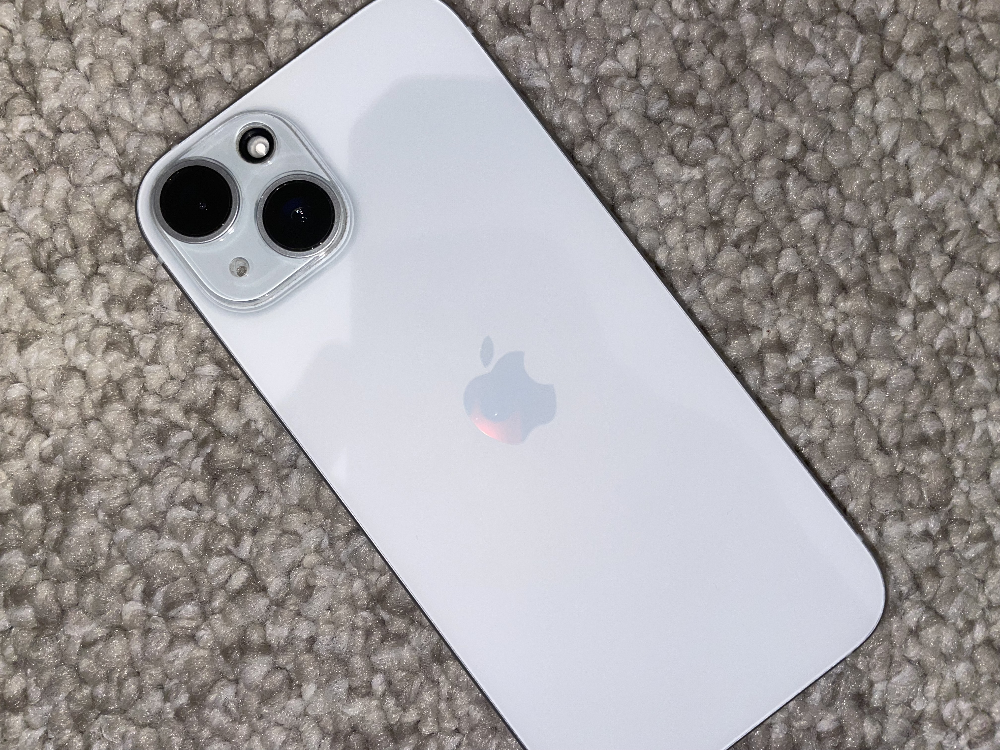

What I make
Most of my videos are about iPhones. Reviews, comparisons and how I actually use them day to day. Once I've got more videos out, I want to start covering other phones, laptops and tech in general, not just iPhones.

I make tech videos, mostly about iPhones right now. As the channel grows, I want to cover more phones, computers and other tech too.
Based in Australia
TikTok doesn't give a way to show these numbers live, so I update them by hand. Last updated —.
Most of my videos are about iPhones. Reviews, comparisons and how I actually use them day to day. Once I've got more videos out, I want to start covering other phones, laptops and tech in general, not just iPhones.
For sponsorships, collabs or anything business-related, email me here. I also accept enquiries through TikTok DMs if that's easier.